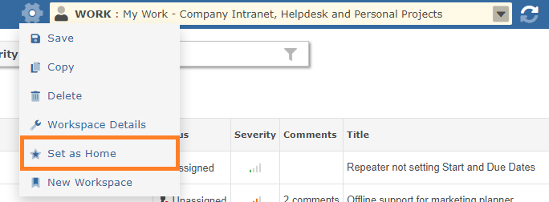

You can set which view/page will be opened when you first login by selecting the Workspace menu and the "Set as Home" option. This will move the selected Workspace to the top of the list and make it the default.
